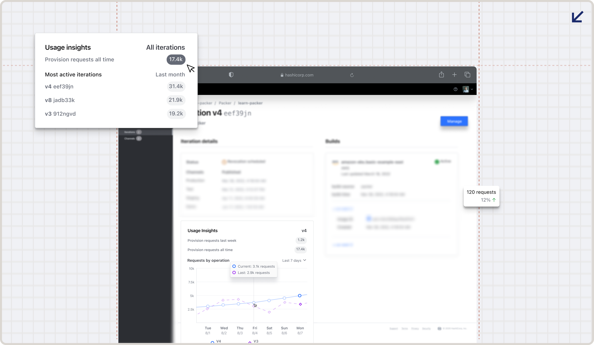
Delivering insights on machine images for devops practitioners.

HashiCorp
Q2 2022
Lead Product Designer, Researcher
Figma, Qualtrics
HashiCorp builds infrastructure products and is the industry standard in Infrastructure as Code (IaC), behind Terraform, Vault, and Consul.
In 2022 I interned on HashiCorp Packer, a tool for building identical machine images across platforms like virtual machines, containers, and cloud instances. These images bundle the software, configuration, and settings needed for consistent, error-free deployment.
Practioners need image usage data to inform their machine image lifecycle management at scale. Currently, Packer does not have an easy way to extract this data. We want to provide information contextually to inform the practitioner and aid them in their decision making process.
We found a key gap in decision-making: users often lack the information they need, leaving them uncertain about what actions to take.
There was a general understanding from existing customer feedback that they lacked actionable data to inform them of how their iterations were being used. Often these metrics would help inform when and how an image's general software lifecycle would fare.
I was able to use HashiCorp's rich OSS community to my advantage, with survey outreach through reddit.
What we lacked was an understanding of which metrics a user actually needed, so we ran research to fill the gap.
On a tight timeline, we needed a rapid method that could clear a critical sample size, which we set at roughly N>50 for our user base. So we leaned on HashiCorp’s open source community and sourced participants through Reddit.
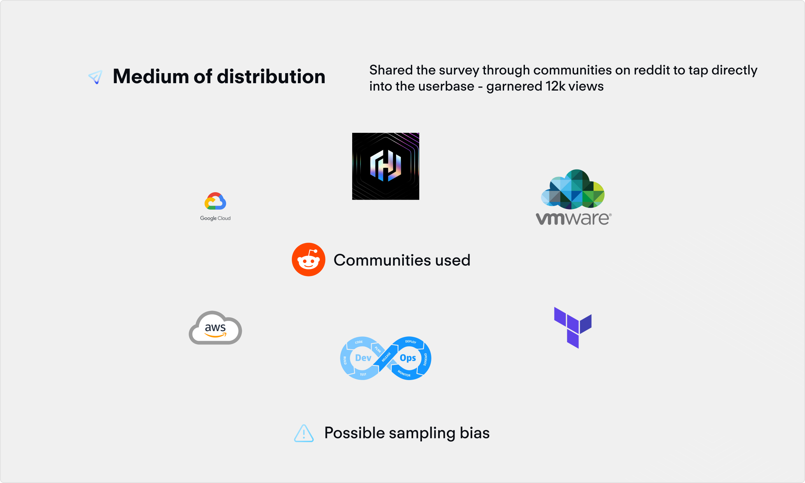
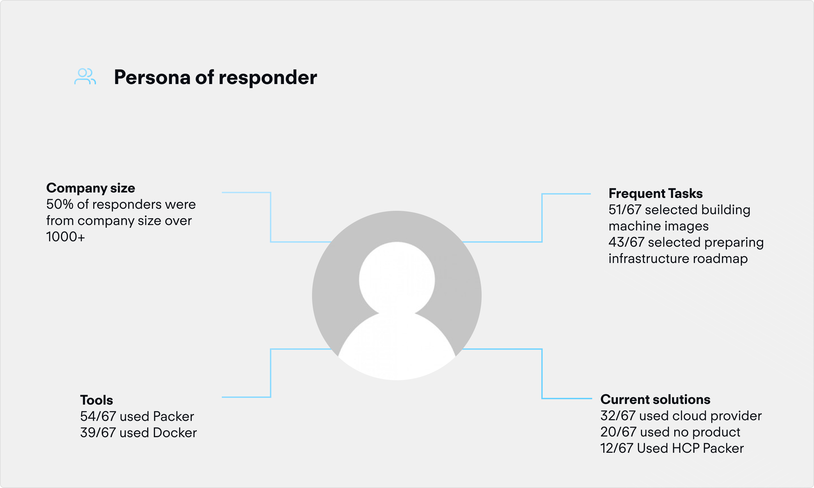
73
Sample Size
12k
Views
15
Metrics Found
From this research, we were able to collect 15 metrics of interest that we were able to stack rank and group into high level themes.

From here, I further workshopped the metrics with engineering and product to understand feasibility, how customers were solving this problem currently, and how these metrics could look.
To better understand which metrics actually fit together, I card sorted using subject matter experts, and then sent that to internal users of our products to validate whether the language was correct.
One hard part of designing a technical product is the fact that it is hard to understand the problem space as well as speak in terms that the end-user would understand, so this was extremely helpful.
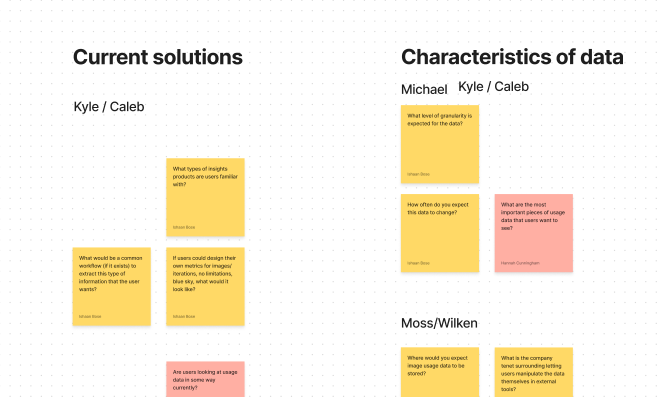
To root this problem in outcomes, not features, I set high level goals that we wanted to target.
+20%
Net new iterations
+14%
Registry usage
-8%
Forced iteration
From here, I created high level wireframes to start critique sessions on information architecture and general workflows.
I ideated through low fidelity wireframes, where I iterated rapidly and sought feedback from our design team. I looked for ideas surrounding context of delivery, and high level user needs.


A useful exercise was rooting everything in 3 core CUJ's that stemmed from the customer research collected via survey.
In an essence, we needed to deliver insights in contextually to make sure that the user is aided in their decision making process. To do this, I delivered the information in 3 levels.
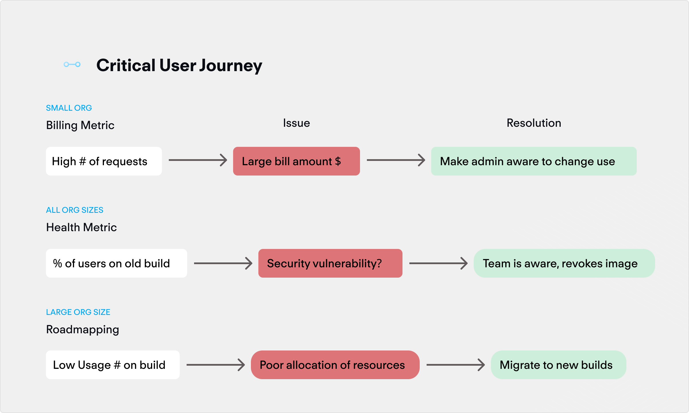
From this research and iteration through critique, I created core mock ups that I validated through user research.
Lets step through what a solution looks like:
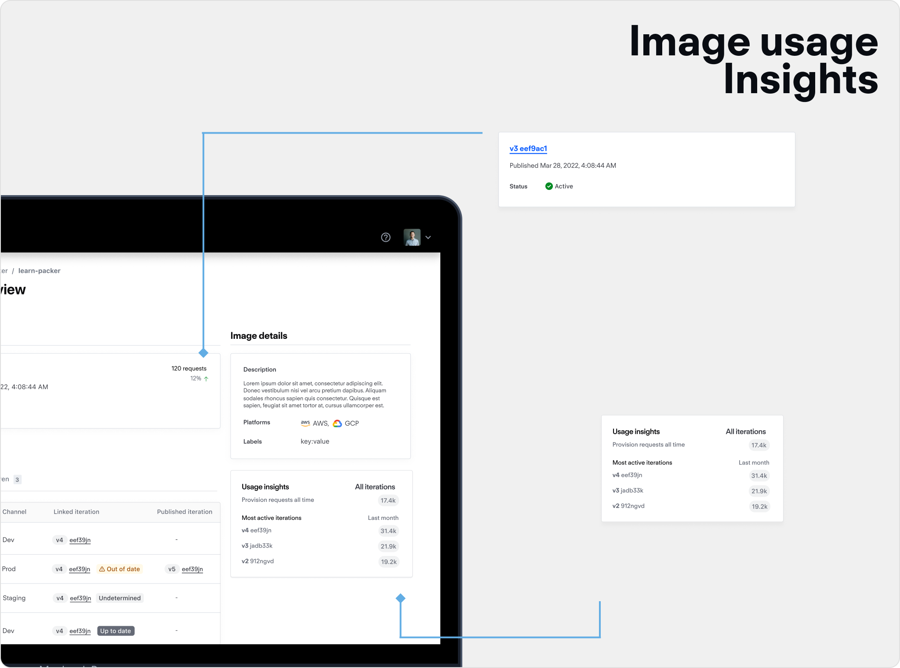
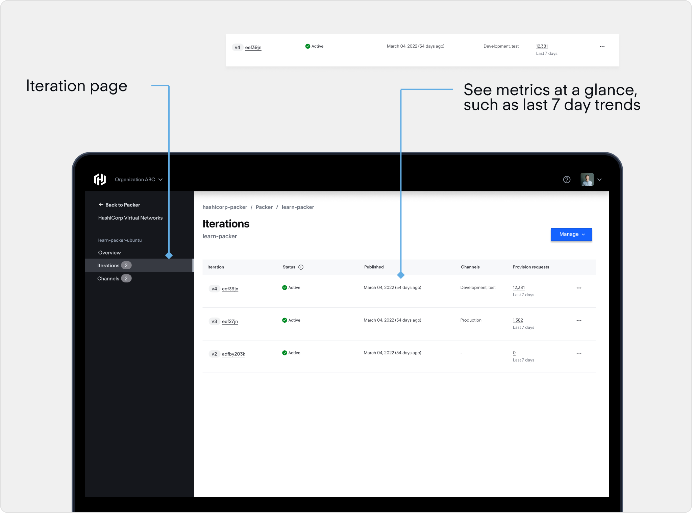
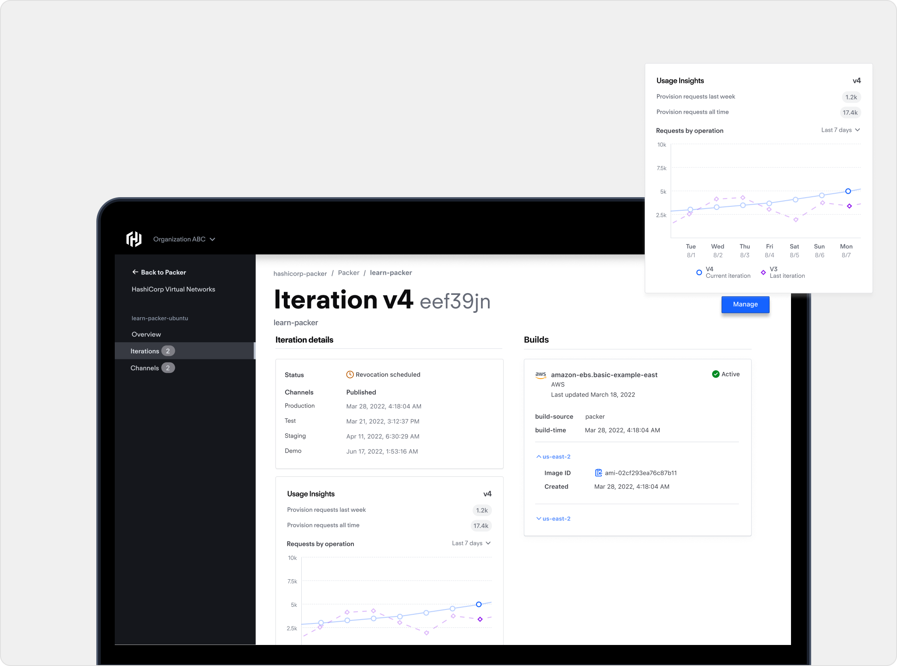
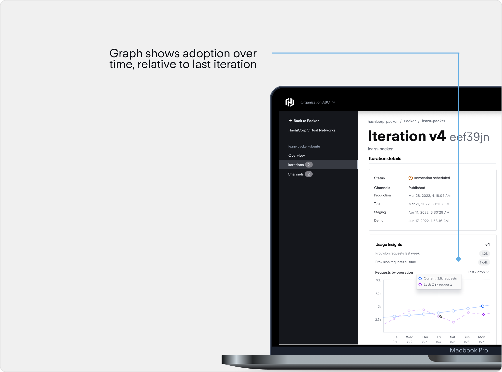
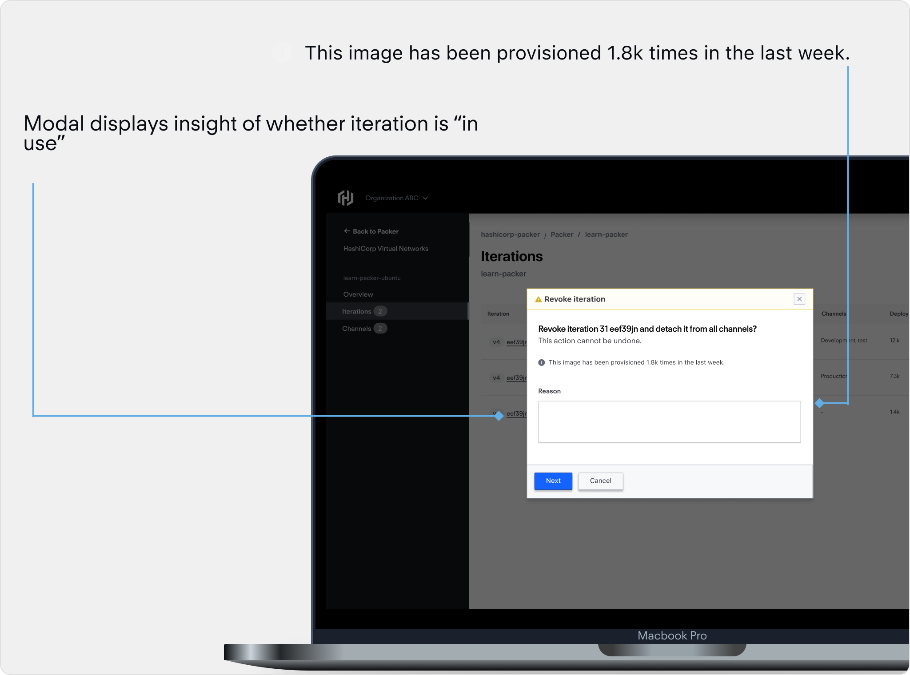
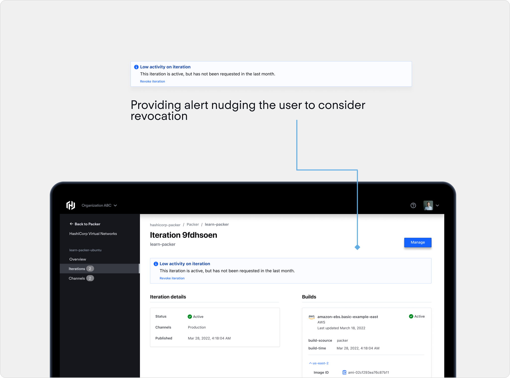
A little motion to illustrate the point
+14%
Net new iterations
+7%
Registry usage
-4%
Forced iteration
The core takeaway was designing for a highly complex tool that thousands of people rely on. That is hard, and the designer's job is to make sure it works to user expectation.
This was one of the best experiences of my career. I enjoyed tackling such a complex problem space, especially coming from a marketing tech company. A few other takeaways:
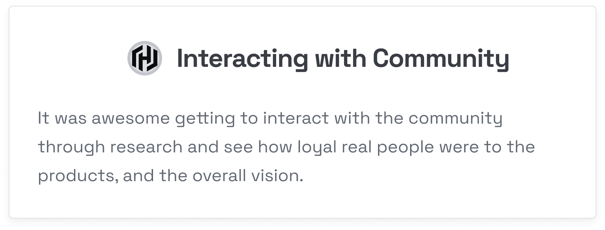

With more time, I'd add more granularity to the results and validate the solution through testing.
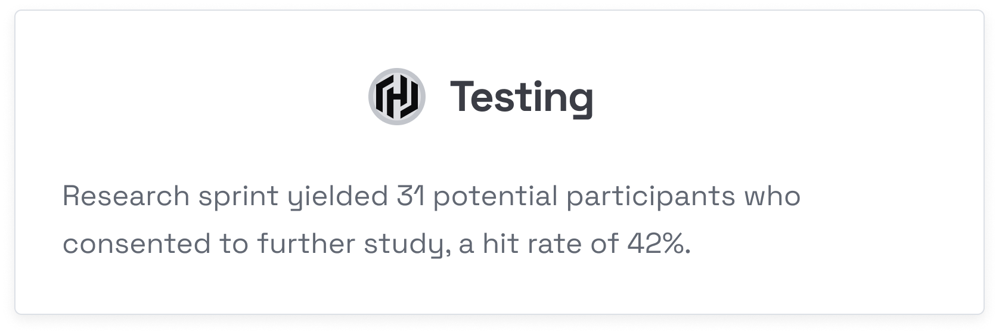
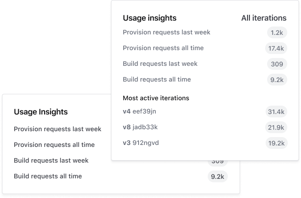